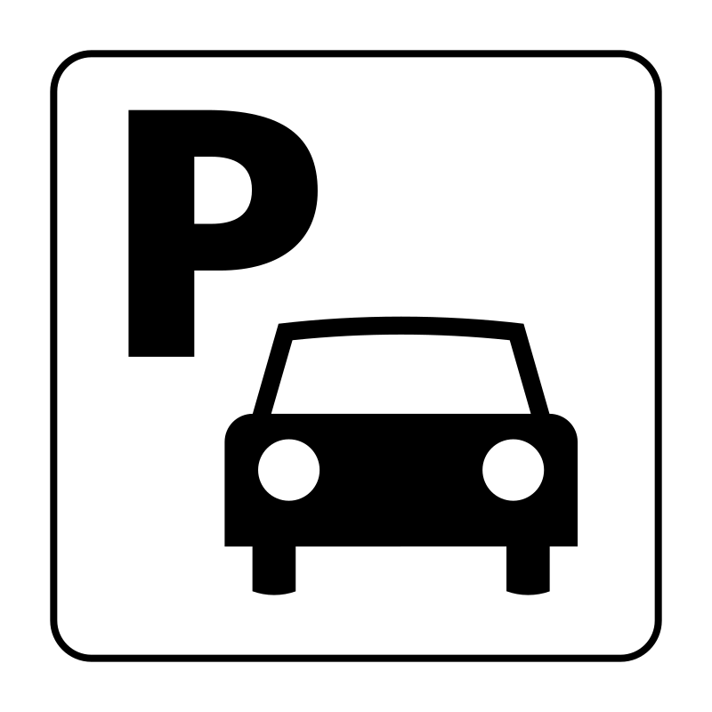
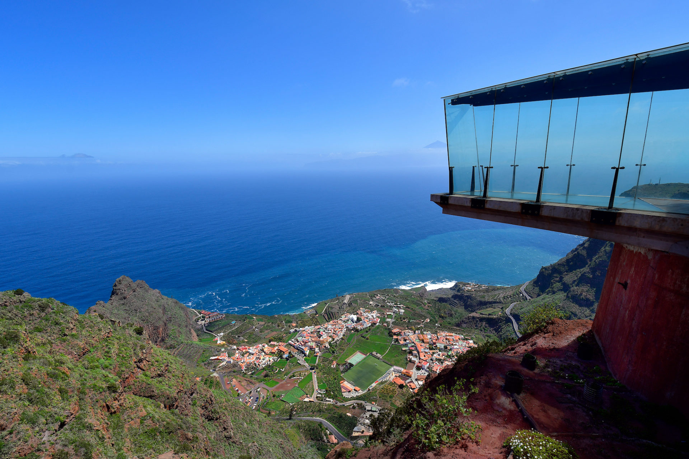

Agulo
Entre bancales y acantilados, el pueblo invita a recorrer sus calles y asomarse al mar.
Agulo, La Gomera
Entre plataneras y con el Atlántico al fondo.
Descubrir la casaAgulo desde lo alto

La casa
La casa está rodeada de plataneras y árboles frutales, al norte de La Gomera. Sus muros de piedra acompañan tres dormitorios, una cocina y un rincón de lectura. Fuera, el solárium se abre al Atlántico.
Ver los espacios
AparcamientoGalería
Selecciona una foto para verla en grande.
El entorno
Entre bancales y acantilados, el pueblo invita a recorrer sus calles y asomarse al mar.

La pasarela de cristal se asoma al risco, con vistas sobre Agulo y la costa norte.